SATIN（サテン）
かつて国内のカートリッジ・メーカーの中で、もっとも独創性が高いとされることが多かったサテン音響のブランド。針交換可能で、高出力のMC型カートリッジが有名で、またゴム系のダンパーや磁性体の追放なども押し進めた。しかし一方で、頻繁なモデルチェンジを繰り返した時期もあり、また派生モデルも多く、一般にはあまり勧められないメーカーとみなされたこともあるようだ。1980年代初頭に新製品の発売は途絶え、1980年代末に消えた。
なお、1960年代にはソニーやトリオ（現 ケンウッド）などに対して、OEM供給もしていたようだ。
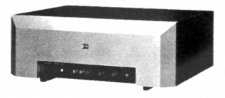
（ブランドの実質的な末期にはセパレート・アンプも手がけた。上記はコントロールアンプ PA-1S。パワーアンプも同系統デザインだった）
�T.カートリッジ
1.MC型
�@M-6、7系
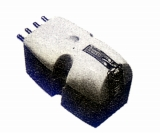
(M6-45)�AM-8系
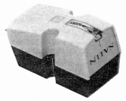
(M8-45E)�BM-11系
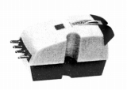
(M-11)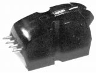
(NEW M-11)�CM-14系
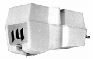
(M-14)M-14 M-14E M-14L M-14LE M-14X M-14LX
�DM-15系
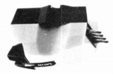
(M15-E)M-15 M-15E M-15L M-15LE M-15X M-15LX
�EM-117系
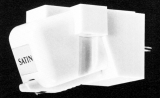 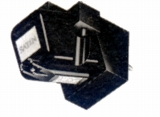
M-117 M-117E M-117X M-117G M-117S
�FM-18系
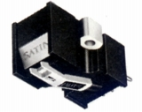 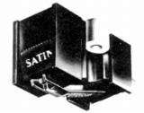
M-18 M-18E M-18X M-18EX M-18BX M-18G M-18BG M-18BP
�GM-118系
�HM-20系
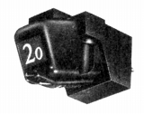
�IM-21系
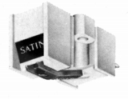
�U.昇圧トランス
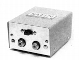
(STD-1)
�V.アーム
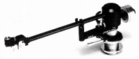
(AR-1)
�W.その他
カートリッジマッチングアダプターとシェルに取付るスタビライザーがある。